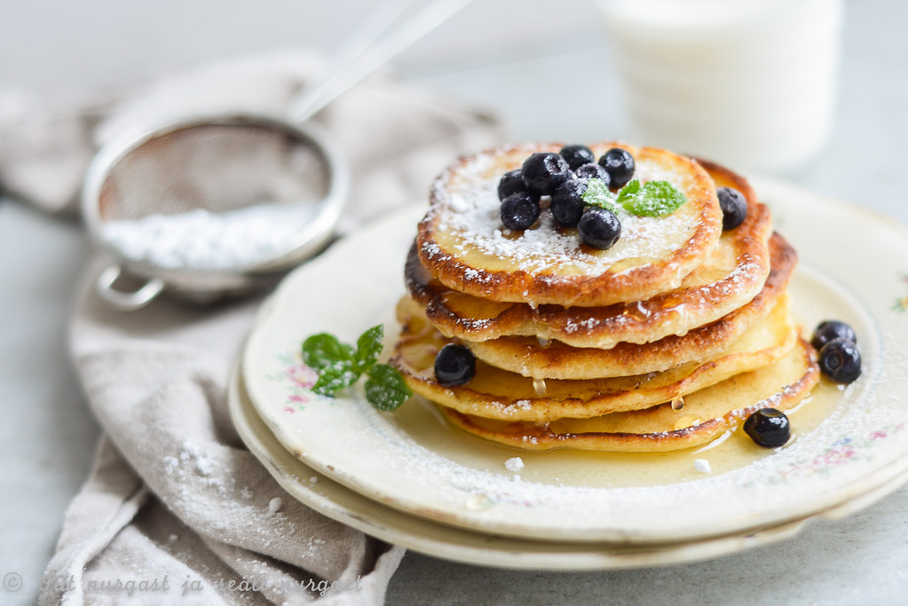

Algretsepti link
Pannkoogid
|  |
| Koostisosa |
Kogus |
| Munad |
4 tk |
| Suhkur |
60g |
| Nisujahu |
200g |
| Sool |
1tl |
| Piima |
5dl |
| Sulatatud või |
50g |
- Klopi munad suhkruga lahti, sega juurde jahu, piim ja näpuotsaga soola ning sega ühtlaseks. Viimasena lisa juurde sulavõi, sega läbi.
- Kuumuta suur pann, lisa sobiv kogus tainast* ja küpseta paar minutit keskmisel kuumusel, kuni pannkook on altpoolt kaunilt kuldne. Keera ringi ja küpseta ka teiselt poolt.